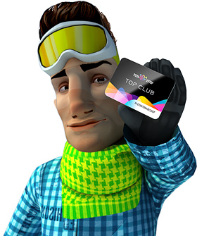

Курорт «Роза Хутор» открылся зимой 2010 г. и принимал любителей горных трасс в тестовом режиме, но, несмотря на это, первый сезон 2010/2011 получился насыщенным и интересным. В прошедшем сезоне курорт посетило более 40 тысяч гостей.
Открытие горнолыжного сезона 2011/2012 — 24 декабря 2011
- Общая протяженность трасс различной сложности в сезоне 2011/2012 — 38 км;
- Пропускная способность комплекса — 6000 человек;
- Подъемники — 8;
- Современная система искусственного оснежения трасс (на более чем 100 га работают 404 стационарных и 25 мобильных снеговых пушек), позволяет обеспечить продолжительность лыжного сезона от 140 до 180 дней в год, в зависимости от высоты пролегания трасс (зимний сезон 2010/2011 завершился 9 мая);
- В сезоне 2011/2012 готовы принять гостей трехзвездочные гостиницы Tulip Inn (148 номеров) и Park Inn (211 номеров). Впервые в Красной Поляне отели расположены в непосредственной близости от подъемников.
Правила пользования услугами горнолыжного комплекса «Роза Хутор»
Схема курорта  Наверх
Наверх
Трассы и подъемники Наверх
Горнолыжная зона курорта «Роза Хутор» находится под управлением Compagnie des Alpes (Франция), одного из мировых лидеров в области управления курортами, включая такие известные, как Tignes, Val d’Isère, Les Arcs, La Plagne, Les Menuires, Les 2Alpes, Méribel, Chamonix.
| Характеристики основных трасс | |||
|---|---|---|---|
| Характеристики основных трасс | Протяженность, м | Сложность | |
| Тритон | 4200 | Синяя трасса | |
| Каскад | 4080 | Красная трасса | |
| Горизонт | 4450 | Красная трасса | |
| Лабиринт | 3200 | Синяя трасса | |
| Аллея звезд | 2750 | Зеленая трасса | |
| Озерная | 1870 | Синяя трасса | |
| Плато | 1800 | Зеленая трасса | |
| Мужской олимпийский спуск | 3800 | Черная трасса | |
| Женский олимпийский спуск | 2810 | Черная трасса | |
| Орел | 700 | Черная трасса | |
| Нагано 98 | 1750 | Синяя трасса | |
| Шамони 24 | 1740 | Синяя трасса | |
| Ванкувер 10 | 2200 | Синяя трасса | |
| Турин 06 | 940 | Красная трасса | |
| Вираж | 670 | Красная трасса | |
| Лесная | 1780 | Фрирайд | |
| Характеристики подъёмников | |||
|---|---|---|---|
| Название | Протяженность, м | Тип | Пропускная способность, чел/час |
| Олимпия | 2341 | Гондольный 8-местный | 2800 |
| Заповедный Лес | 1551 | Гондольный 8-местный | 2400 |
| Экстрим | 906 | Кресельный 4 местный | 1790 |
| Кавказский экспресс | 2370 | Гондольный 8-местный | 2400 |
| Волчья Скала | 1379 | Кресельный 6-местный | 3000 |
| Волшебный Ковер | 140 | Конвейерный | 500 |
| Волшебный Ковер | 85 | Конвейерный | 500 |
| Детский Волшебный Ковер | 72 | Конвейерный | 500 |
Время работы подъемников Наверх
| Зимний период 2011—2012 | ||||||
| 24 декабря | 25 января | 8 марта | 9 мая | |||
|---|---|---|---|---|---|---|
| Олимпия | 08:45 – 16:00 | — | 08:45 – 17:00 | |||
| Заповедный лес | 09:00 – 16:10 | — | 09:00 – 17:10 | |||
| Кавказский Экспресс | 09:15 – 16:00 | — | 09:15 – 17:00 | |||
| Волчья скала | 09:15 – 16:20 | — | 09:15 – 17:20 | |||
| Волшебные ковры | 09:15 – 16:00 | — | 09:15 – 17:00 | |||
| Экстрим | 09:15 – 16:20 | — | 09:15 – 17:20 | |||
 Курорт закрыт на время проведения тестовых соревнований с 25 января 2012 до 7 марта 2012. | ||||||
Ски-пассы Наверх
| Тарифы | ||||
|---|---|---|---|---|
|
Обычный: взрослые или дети старше 4 лет руб. |
Семейный 2 взрослых + 1-4 ребенка или 1 взрослый + 2-4 ребенка (5-14 лет) руб. |
Льготный I дети до 4 лет включительно, инвалиды I группы руб. |
Льготный II сопровождающие инвалида I группы руб. | |
| 4 часа | 1 250 | — | — | — |
| 1 день | 1 400 | 3 900 | 0 | 700 |
| 2 дня подряд | 2 600 | 7 300 | — | — |
| 3 дня подряд | 3 800 | 10 700 | — | — |
| 3 дня (из 6) | 4 000 | 11 200 | — | — |
| 4 дня подряд | 5 000 | 14 000 | — | — |
| 5 дней подряд | 6 200 | 17 400 | — | — |
| 6 дней (из 8) | 7 000 | 19 600 | — | — |
| Бесконтактная карта (БСК), возврату не подлежит | 100 руб. |
| Экскурсионные билеты | ||||
|---|---|---|---|---|
| Маршрут (туда и обратно) |
Обычный: взрослые или дети старше 4 лет руб. |
Семейный 2 взрослых + 1-4 ребенка или 1 взрослый + 2-4 ребенка (5-14 лет) руб. |
Льготный I дети до 4 лет включительно, инвалиды I группы руб. |
Льготный II сопровождающие инвалида I группы руб. |
| Роза Долина — Роза Плато (550 м — 1150 м) | 500 | 1 500 | 0 | 250 |
| Роза Долина — Роза Плато — Роза Пик (550 м — 2320 м) | 800 | 2 400 | 0 | 400 |
| Роза Плато — Роза Пик (1150 м — 2320 м) | 400 | 1 200 | 0 | 200 |
Школьная скидка на экскурсионные билеты (тариф льготный II) предоставляется группам школьников от 10 человек в сопровождении взрослого, при условии предьявления справок из школы или школьных билетов.
Семейная скидка предоставляется при покупке скипасса на всех членов семьи, состоящей из 2 взрослых и 1 или нескольких (до 4) детей возрастом до 14 лет включительно, или 1 взрослого и от 2 до 4 детей до 14 лет включительно.
Покупка
Все цены указаны в рублях, в т.ч. НДС 18%.
Услуги Наверх
К услугам для отдыхающих горнолыжного курорта «Роза Хутор»:
— Камеры хранения;
— Широкий выбор спортивного инвентаря в пункте проката: горные лыжи и сноуборды;
— Услуги инструкторов высокой квалификации. Школа горных лыж и сноуборда.
Правила проката
Залог за предоставляемый инвентарь составляет 7 000 руб. На 1 ски-пасс можно оформить не более 2-х комплектов. Инвентарь необходимо сдать до конца работы проката. Если инвентарь возвращается на следующий день, с клиента взимается оплата за дополнительный день.
| Прокат снаряжения | ||||||
|---|---|---|---|---|---|---|
|
1 день Взрослый руб. |
1 день Детский (до 14 лет) руб. |
6 дней подряд Взрослый руб. |
6 дней подряд Детский (до 14 лет) руб. |
7-й день и далее, цена за день, Взрослый руб. |
7-й день и далее, цена за день, Детский (до 14 лет) руб. | |
| Комплект сноуборд | 1 000 | 800 | 5 000 | 4 000 | 850 | 700 |
| Комплект горнолыжный фрирайд | 1 400 | — | 7 000 | — | 1 150 | — |
| Ботинки для сноуборда | 350 | 300 | 1 750 | 1 500 | 300 | 250 |
| Сноуборд | 750 | 600 | 3 750 | 3 000 | 650 | 500 |
| Горнолыжные ботинки | 300 | 250 | 1 500 | 1 250 | 250 | 200 |
| Горнолыжные ботинки фрирайд | 400 | — | 2 000 | — | 350 | — |
| Горные лыжи | 600 | 450 | 3 000 | 2 250 | 500 | 400 |
| Горные лыжи фрирайд | 900 | — | 4 500 | — | 750 | — |
| Палки | 200 | 200 | 1 000 | 1 000 | 150 | 150 |
| Шлем | 350 | 350 | 1 750 | 1 750 | 300 | 300 |
| Камеры хранения (локеры) | |||
|---|---|---|---|
|
24 часа руб. |
В сезон руб. | ||
| Маленький локер без сушки | 150 | 3 000 | |
| 2-х местный локер с сушкой | 200 | 4 000 | |
| 5-ти местный локер с сушкой | 350 | 7 000 | |
| Парковка | |
|---|---|
| руб. | |
| 24 часа | 300 |
| Школа горных лыж и сноуборда | ||
|---|---|---|
|
Индивидуальные занятия для 1 или 2 человек взрослые и дети старше 5 лет, цена за занятие руб. |
Для семьи или компании друзей (3-10 человек) взрослые и дети старше 10 лет, цена за группу руб. | |
| 1 час | 1 600 | — |
| 2 часа | 3 000 | — |
| 4 часа | 4 000 | — |
| 1 день | 6 000 | 10 000 |
|
Занятия в группах с 10:00 до 13:00 по записи (3-10 чел., взрослые и детские группы) взрослые и дети с 5 лет, цена для 1 человека руб. | ||
| 3 часа | 1 500 | |
| 3 часа, 6 дней из 8 | 7 500 | |
Топ клуб Наверх
Бонусная программа
Станьте привилегированным гостем Роза Хутор!
-
Катайтесь со скидкой до 50%, получайте подарки, пользуйтесь особыми клубными привилегиями на курорте «Роза Хутор»
Привилегии для членов клуба:
- покупка ски-пасса на 1 день со скидкой до 50%
- возможность использования клубной карты в качестве ски-пасса
- возможность копить баллы и обменивать их в конце сезона на приятные подарки
- участие в соревнованиях, мероприятиях, вечеринках, проводимых курортом для своих гостей на льготных условиях
- возможность получать новости курорта по электронной почте или при помощи sms-рассылки
Детский клуб Наверх
Для семей с детьми открыт Детский клуб, где родители могут оставить своего ребенка на несколько часов. Ребенок сможет обучаться катанию с профессиональными инструкторами на специальном, огороженном детском склоне, где установлен подъемник «Волшебный ковер», а также провести время в детской игровой комнате со своими сверстниками под присмотром квалифицированных воспитателей.
| Стоимость занятий | |||||
|---|---|---|---|---|---|
|
Дети 5–12 лет,
вкл. 2 часа занятий на горных лыжах руб. |
Дети 5–12 лет,
занятия на горных лыжах |
Дети 3–12 лет, игровая комната,
максимум 4 часа за посещение руб. | |||
| 4 часа | 2 500 | 2 часа | 2 200 | 1-4 часа | 350 |
| 4 часа, 6 дней из 8 | 12 500 | 2 часа, 6 дней из 8 | 11 000 | ||
| Поделиться: |
|